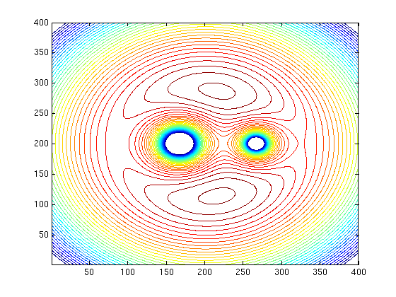

The Reduced 3-Body Effective Potential: Plotting contours
Plotting contours
m1 = 1; m2 = .5; m = m1+m2; omegasq = m; a =1; a1 = m2/m; a2 = a-a1; x1 = -a1; x2 = a2; y1=0; y2=0; phieff =@(x,y) -.5*(x.^2 + y.^2)*omegasq - m1./sqrt((x-x1).^2+(y-y1).^2) - m2./sqrt((x-x2).^2+(y-y2).^2); x = linspace(-2.,2,400); y = linspace(-2.,2,400)'; i = ones(400,1); matx = kron(i,x); maty = -matx'; tryd = phieff(matx,maty); %surf(tryd) %plot(tryd(:,100)) %plot(phieffmat) %plot(x,phieff(x,0)) contour(tryd,linspace(-6,5, 100)) %axis([90 110 80 100])